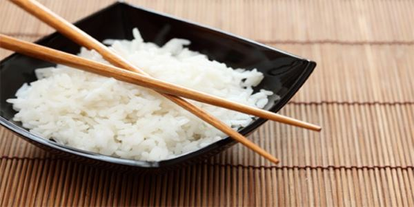
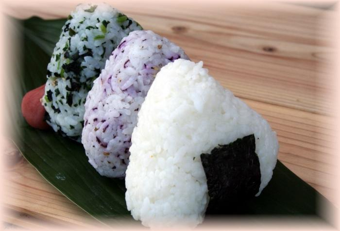

Yummy recipes
Курица терияки |
Японский суп рамен |
Японский бисквит «Кастелла»

Всем известно, что японцы являются самой здоровой и долгоживущей нацией в мире. В этом есть большая заслуга традиционной кухни, в которой отдают предпочтение натуральным продуктам, с минимумом обработки. Так что едят японцы в повседневной жизни ?
- Рыба: тунец, лосось, скумбрия, морской окунь, угорь, морской лещ, фугу и многие другие.
- Морепродукты: осьминоги, мидии, креветки, гребешок, морской еж, кальмары, крабы.
- Рис. Японцы называют его «гохан».
- Соя и продукты из нее: мисо, тофу, натто, соевый соус.
- Лапша: удон (из пшеничной муки без яиц), рамэн (из яиц и пшеничной муки), соба (из гречневой муки), рисовая лапша (из рисовой муки), стеклянная лапша (из бобового крахмала).
- Фасоль.
- Морские водоросли.
- Мясо: говядина и свинина
- Овощи: огурцы, морковь, капуста, батат, дайкон, имбирь, спаржа, ростки бамбука.
© Афиша "Еда" |
Удивительная Япония